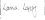

Study Title: Ambient and Passive Collection of Sleep and Circadian Rhythm Data (AMBIENT-BD)
Dear Research Participant,
Thank you for your interest and support of Ambient-BD, a research project at Maynooth University investigating bipolar disorder. Bipolar disorder is defined by extreme variability in mood, activity, sleep and circadian timing that recurs over weeks and months. But despite this, most research studies in the past have monitored changes in sleep timing over 1-2 weeks, which is not long enough to capture long-term changes in circadian rhythms. Ambient-BD is a 5-year research project at Maynooth University in collaboration with the University of Edinburgh that aims to change this by developing methods that can monitor changes in sleep timing over months or even years. This will further understanding of circadian rhythms and help improve the care that can be offered to people with bipolar disorder.
The first two years of the research in Ambient-BD are based at Maynooth University where we will optimise innovative methods for assessment of circadian rhythms and test their performance against gold standards. The success of these studies and indeed of Ambient-BD as a whole relies on the contribution and work of the volunteers that give their time to help us advance the prevention and treatment of bipolar disorder. Thank you for your interest in participating in Ambient-BD, we hope that these webpages will tell you everything you need to know and we look forward to welcoming you as a research participant in Ambient-BD soon.
Please do not hesitate to get in touch if you have any questions, we would love to hear from you (ambientbd@mu.ie)
With many thanks for your interest in the research.
Yours sincerely,

Associate Professor
Department of Biology
Maynooth University